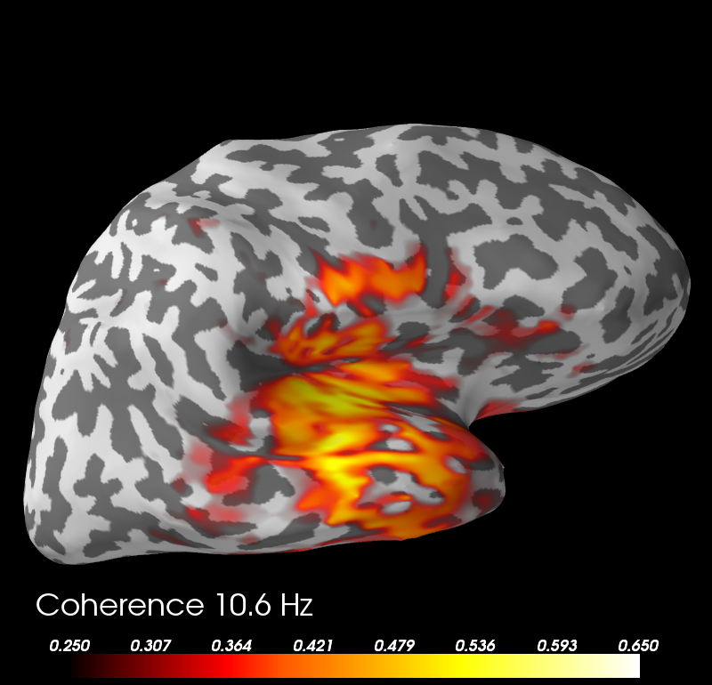

This examples computes the coherence between a seed in the left auditory cortex and the rest of the brain based on single-trial MNE-dSPM inverse soltions.
Script output:
Frequencies in Hz over which coherence was averaged for alpha:
[ 8.49926873 9.91581352 11.33235831 12.74890309]
Frequencies in Hz over which coherence was averaged for beta:
[ 14.16544788 15.58199267 16.99853746 18.41508225 19.83162704
21.24817182 22.66471661 24.0812614 25.49780619 26.91435098
28.33089577 29.74744055]
Python source code: plot_mne_inverse_coherence_epochs.py
# Author: Martin Luessi <mluessi@nmr.mgh.harvard.edu>
#
# License: BSD (3-clause)
import numpy as np
import mne
from mne.datasets import sample
from mne.io import Raw
from mne.minimum_norm import (apply_inverse, apply_inverse_epochs,
read_inverse_operator)
from mne.connectivity import seed_target_indices, spectral_connectivity
print(__doc__)
data_path = sample.data_path()
subjects_dir = data_path + '/subjects'
fname_inv = data_path + '/MEG/sample/sample_audvis-meg-oct-6-meg-inv.fif'
fname_raw = data_path + '/MEG/sample/sample_audvis_filt-0-40_raw.fif'
fname_event = data_path + '/MEG/sample/sample_audvis_filt-0-40_raw-eve.fif'
label_name_lh = 'Aud-lh'
fname_label_lh = data_path + '/MEG/sample/labels/%s.label' % label_name_lh
event_id, tmin, tmax = 1, -0.2, 0.5
method = "dSPM" # use dSPM method (could also be MNE or sLORETA)
# Load data
inverse_operator = read_inverse_operator(fname_inv)
label_lh = mne.read_label(fname_label_lh)
raw = Raw(fname_raw)
events = mne.read_events(fname_event)
# Add a bad channel
raw.info['bads'] += ['MEG 2443']
# pick MEG channels
picks = mne.pick_types(raw.info, meg=True, eeg=False, stim=False, eog=True,
exclude='bads')
# Read epochs
epochs = mne.Epochs(raw, events, event_id, tmin, tmax, picks=picks,
baseline=(None, 0), reject=dict(mag=4e-12, grad=4000e-13,
eog=150e-6))
# First, we find the most active vertex in the left auditory cortex, which
# we will later use as seed for the connectivity computation
snr = 3.0
lambda2 = 1.0 / snr ** 2
evoked = epochs.average()
stc = apply_inverse(evoked, inverse_operator, lambda2, method,
pick_ori="normal")
# Restrict the source estimate to the label in the left auditory cortex
stc_label = stc.in_label(label_lh)
# Find number and index of vertex with most power
src_pow = np.sum(stc_label.data ** 2, axis=1)
seed_vertno = stc_label.vertices[0][np.argmax(src_pow)]
seed_idx = np.searchsorted(stc.vertices[0], seed_vertno) # index in orig stc
# Generate index parameter for seed-based connectivity analysis
n_sources = stc.data.shape[0]
indices = seed_target_indices([seed_idx], np.arange(n_sources))
# Compute inverse solution and for each epoch. By using "return_generator=True"
# stcs will be a generator object instead of a list. This allows us so to
# compute the coherence without having to keep all source estimates in memory.
snr = 1.0 # use lower SNR for single epochs
lambda2 = 1.0 / snr ** 2
stcs = apply_inverse_epochs(epochs, inverse_operator, lambda2, method,
pick_ori="normal", return_generator=True)
# Now we are ready to compute the coherence in the alpha and beta band.
# fmin and fmax specify the lower and upper freq. for each band, resp.
fmin = (8., 13.)
fmax = (13., 30.)
sfreq = raw.info['sfreq'] # the sampling frequency
# Now we compute connectivity. To speed things up, we use 2 parallel jobs
# and use mode='fourier', which uses a FFT with a Hanning window
# to compute the spectra (instead of multitaper estimation, which has a
# lower variance but is slower). By using faverage=True, we directly
# average the coherence in the alpha and beta band, i.e., we will only
# get 2 frequency bins
coh, freqs, times, n_epochs, n_tapers = spectral_connectivity(
stcs, method='coh', mode='fourier', indices=indices,
sfreq=sfreq, fmin=fmin, fmax=fmax, faverage=True, n_jobs=2)
print('Frequencies in Hz over which coherence was averaged for alpha: ')
print(freqs[0])
print('Frequencies in Hz over which coherence was averaged for beta: ')
print(freqs[1])
# Generate a SourceEstimate with the coherence. This is simple since we
# used a single seed. For more than one seeds we would have to split coh.
# Note: We use a hack to save the frequency axis as time
tmin = np.mean(freqs[0])
tstep = np.mean(freqs[1]) - tmin
coh_stc = mne.SourceEstimate(coh, vertices=stc.vertices, tmin=1e-3 * tmin,
tstep=1e-3 * tstep, subject='sample')
# Now we can visualize the coherence using the plot method
brain = coh_stc.plot('sample', 'inflated', 'both',
time_label='Coherence %0.1f Hz',
subjects_dir=subjects_dir,
clim=dict(kind='value', lims=(0.25, 0.4, 0.65)))
brain.show_view('lateral')
Total running time of the example: 24 seconds